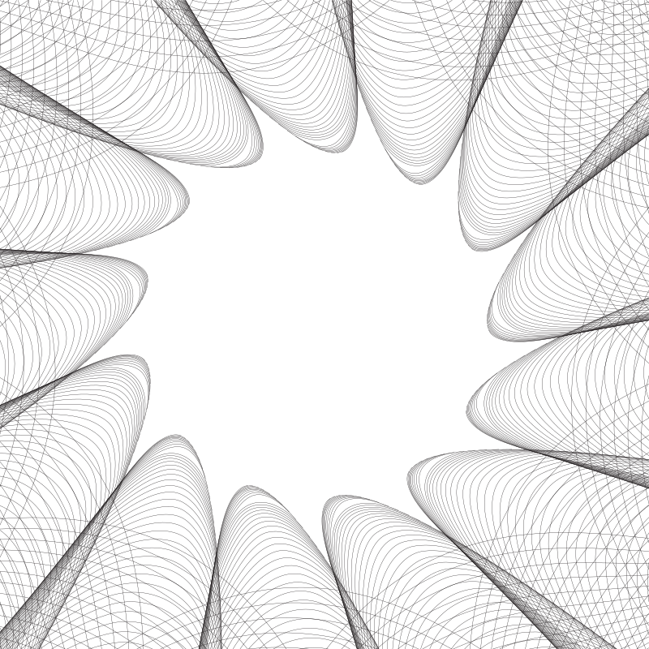
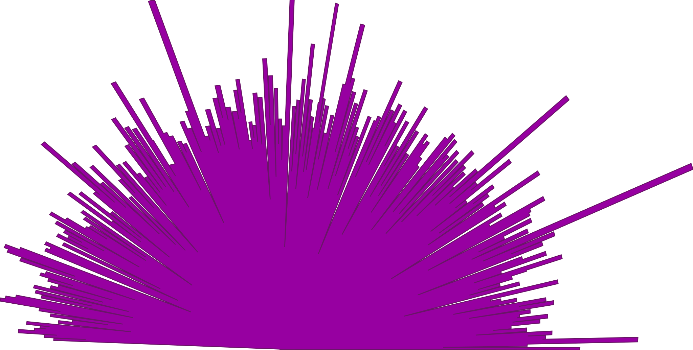
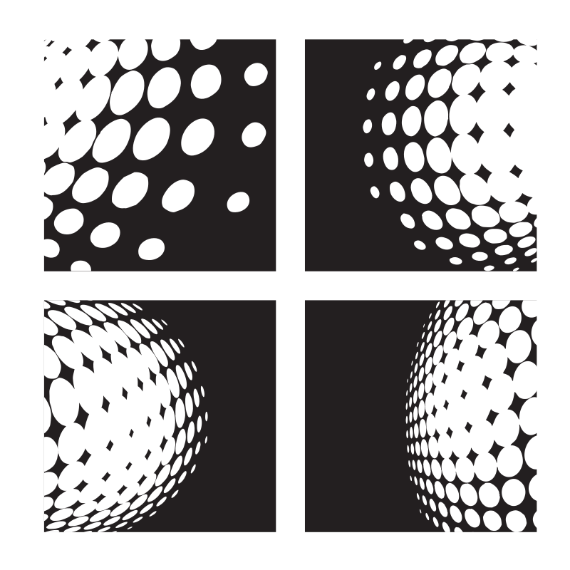

Living Water活水堂西區 · 套嵌
A06 / I01活水堂西區≤56%（此校樣）
疏印 · 24%
中印 · 48%
重印 · 76%
套嵌如何成為材質
外方與內方套嵌成為水流的兩側與天井；原有分流刻線不重畫。
只在外圍或開紅海構圖兩側；中央建築、經文及禮拜文字不被紋理侵入。
- 位置
- 外方四周；天井絕對留白
- 墨量與線重
- 原刻線粗細不變
- 字體及排版
- 重字標立於外方；細字及日程落在清晰天井
- 圖像裁切
- 白模完整保留；不切十字架、屋頂或天井
- 細節與引導
- 取外方與天井的共軸邊，形成短線和入口定位

The Journal西望 · 橫向
A01 / P01西望0% 固定底紋
疏印 · 25%
中印 · 50%
重印 · 75%
橫向如何成為材質
橫向雙方成為編輯雙頁；紙地本身就是留白，版線來自兩個底邊及中縫。
不做全刊固定底紋；依內容選圖，局部印刷線只服務分欄、引文或頁碼。
- 位置
- 兩方下緣及中縫（不是底紋）
- 墨量與線重
- 分欄細線為原方邊；不另加裝飾星野
- 字體及排版
- 英文刊頭與中文副題沿同一橫軸，信章保持獨立
- 圖像裁切
- 兩張主圖各使用方形窗口，必要時保留原畫幅
- 細節與引導
- 兩段50單位線與4單位方間距，導出雙頁節拍
西望原有星光已退役，這裡只研究紙地與版線。
Emmaus以馬忤斯 · 交織
P02 / P03以馬忤斯≤43%（此校樣）
疏印 · 18%
中印 · 35%
重印 · 58%
交織如何成為材質
雙方共同方形未著墨，兩個方形家族的刻線沿各自邊折返；交點交替讓位。
刻線以兩側書頁的外緣進入，正文及共同方窗保留純紙；不是滿版經緯網。
- 位置
- 左上、右下交織場；中央32×32方窗空白
- 墨量與線重
- 近折角粗、遠端細；兩組線重不同但原方等大
- 字體及排版
- 書卷與章次沿原方邊；中英經文印面正立
- 圖像裁切
- 圖版與地圖佔另一方；重要地名不裁切
- 細節與引導
- 交點前後順序決定線段中斷；返回原閱讀位置不加箭頭

Olive Mountain橄欖山 · 縱向
A02 / P04橄欖山≤38%（此校樣）
疏印 · 22%
中印 · 45%
重印 · 76%
縱向如何成為材質
縱向上下雙方形成高差與山勢；保留原有連續等高線的相位，非兩張重複貼圖。
上下連續裁切，人物與講道經文有清晰安全區；不改已確認的卡背或P2地形。
- 位置
- 縱向兩場同一底圖；中縫不填墨
- 墨量與線重
- 沿用原地形粗細、曲率
- 字體及排版
- 講員名稱、題名與經文沿縱軸；不壓人物
- 圖像裁切
- 人像面部不裁切；地形連續而非卡片重置
- 細節與引導
- 上下方邊形成垂直閱讀節奏與欄目節拍

Dawn Books黎明書局 · 立體
V02 / V05黎明書局≤26%（此校樣）
疏印 · 18%
中印 · 38%
重印 · 62%
立體如何成為材質
由前後等大原方的對應邊產生上折面、側折面；刻線像書頁的層疊，不另畫無關花紋。
只在書脊、上沿、側沿及版芯外緣；正視方留給完整書封、同冊圖版、經文。
- 位置
- 上與右兩個派生面；正面留空
- 墨量與線重
- 折邊主線與內頁細線同向；層間不等密
- 字體及排版
- 書名與作者維持正立，折面只決定錨點
- 圖像裁切
- 書封原比例 contain，不切文字
- 細節與引導
- 由折角生成版芯細線、書脊及目錄分段

Daylight Café白晝咖啡館 · 受光
L01白晝咖啡館≤43%（此校樣上限）
疏印 · 12%
中印 · 26%
重印 · 42%
受光如何成為材質
兩個平面光域共用未著墨方形；墨量隨離共同光域的距離變化。
只在光域外緣；大留白供日常生活文字。R154 原藝術不替換。
- 位置
- 兩方外緣，中央共同方窗留白
- 墨量與線重
- 向光窗靠近線更細且間隔更疏
- 字體及排版
- 生活正文細字以純紙承載；大英文不壓入光窗
- 圖像裁切
- 圖像按內容裁切，中央光域不放裝飾
- 細節與引導
- 受光邊緣以稀疏線點提示；不替代日曆控制

Paradise Cinema天堂電影院 · 投影
L02 / L03天堂電影院≤43%（此校樣上限）
疏印 · 18%
中印 · 38%
重印 · 65%
投影如何成為材質
由光向位移生成承影輪廓，再扣去共同方形。沿投影方向以半色調及刻線表達墨影。
只在銀幕外的承影場與幕帳邊緣；影片16:9及字幕全部不著紋。R154 原藝術不替換。
- 位置
- 承影場；共同方窗不著墨
- 墨量與線重
- 投影方向等距刻線，遠端逐步減墨
- 字體及排版
- 片名及字幕位於乾淨區域，避免在紋上小字
- 圖像裁切
- 影片與海報原畫幅優先；不把影片強切為方
- 細節與引導
- 光影的邊決定幕緣短線；返回和播放功能分離
